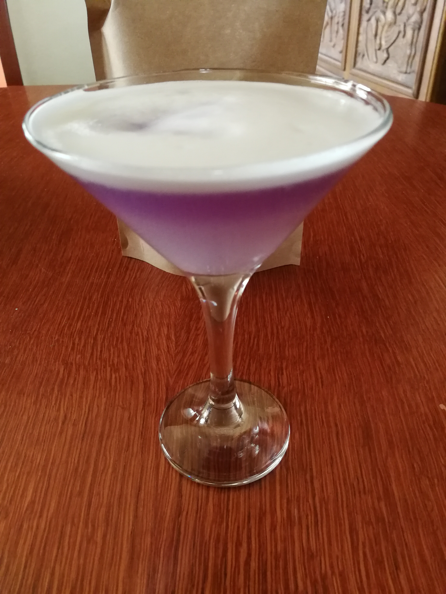
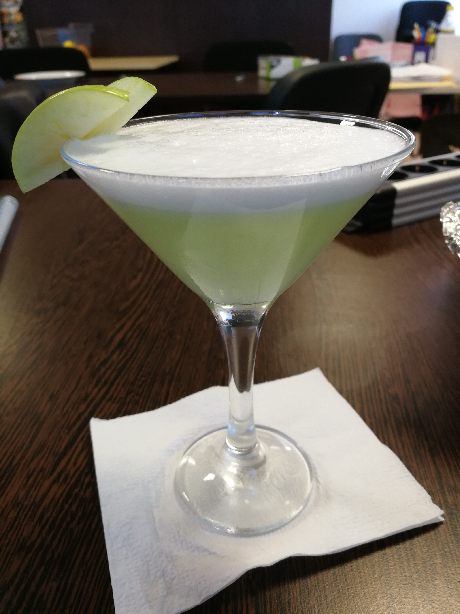
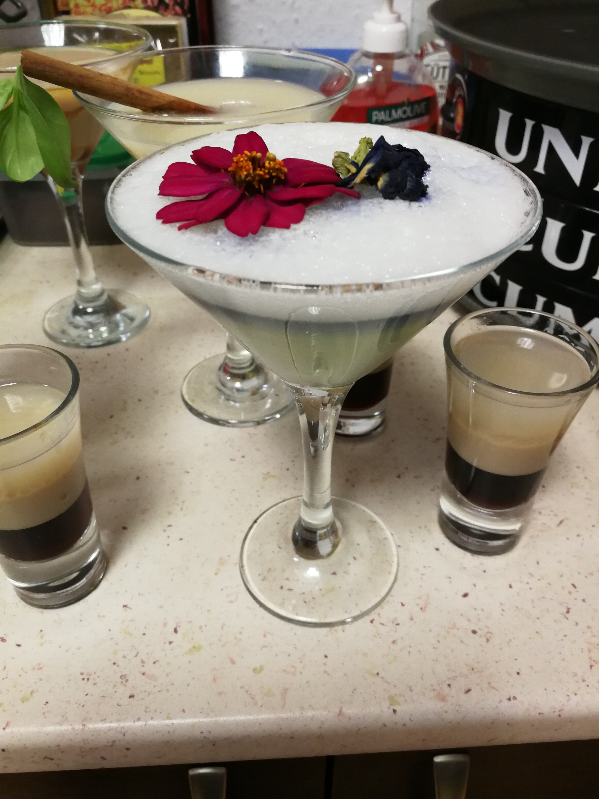
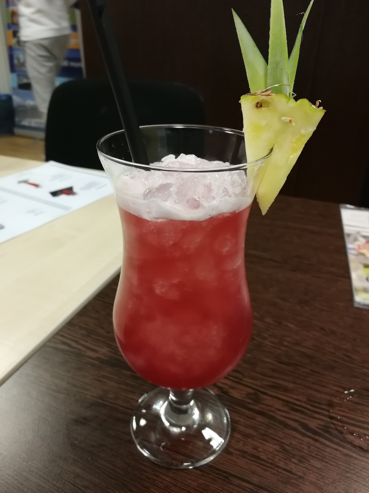
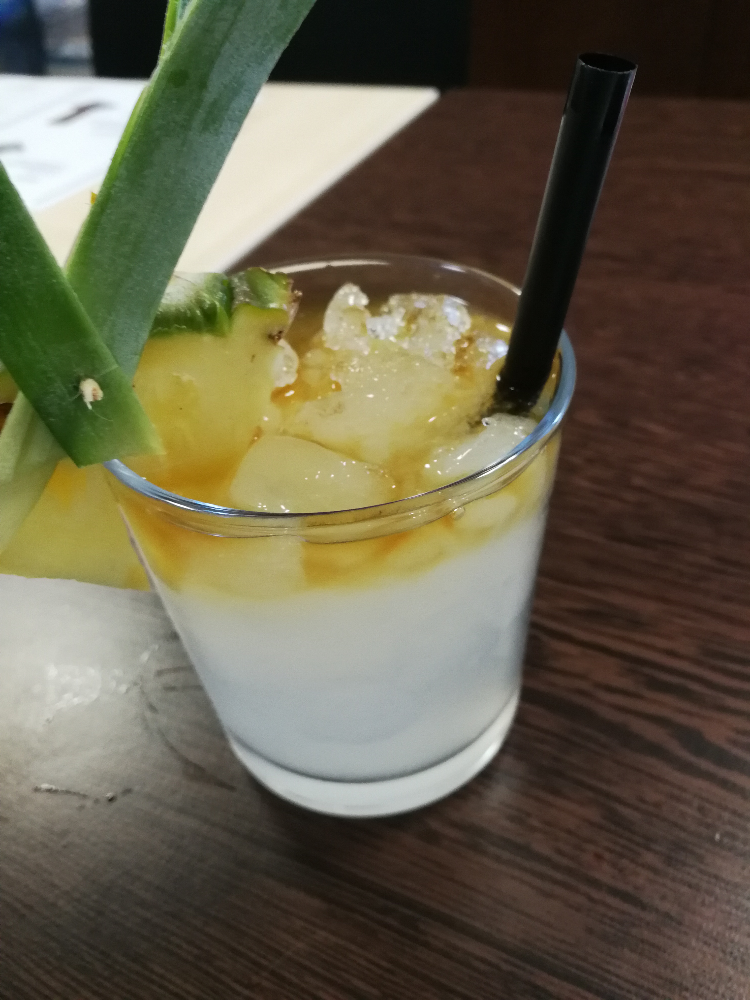
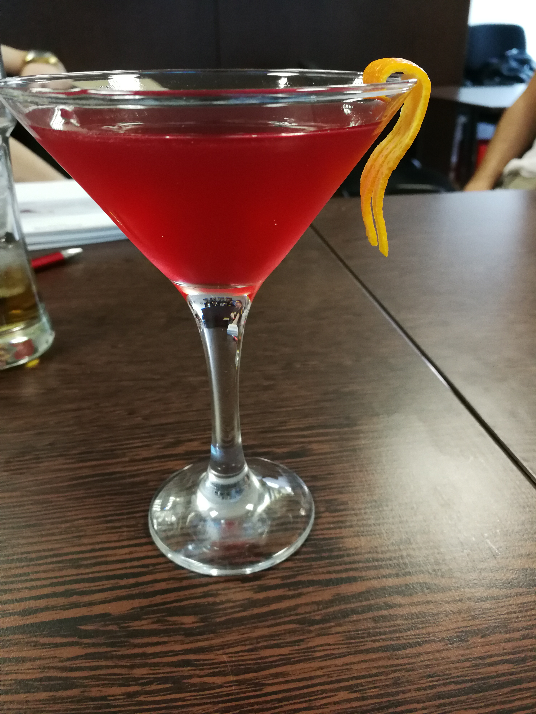
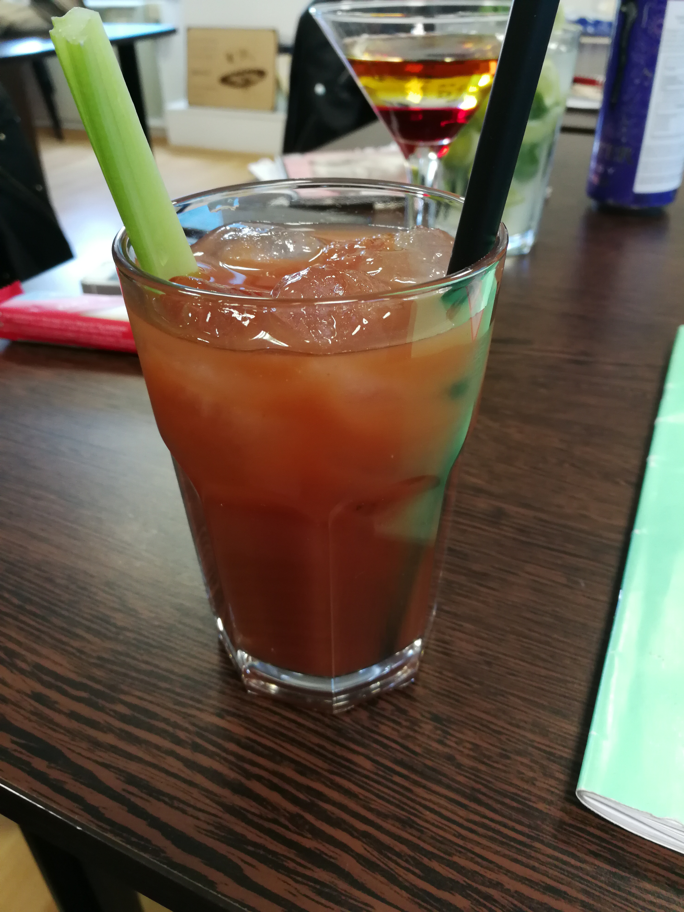

Főoldal
Galéria
Kapcsolat
Dokumentáció




Singapore Sling
-4cl gin
-2cl cherry brandy
-0,5cl Benedictine likőr
-0,5cl TripleSec
-1cl grenadine szirup
-3cl citromlé
-1 dash Angostura Bitter
-ananászlé

Mai Tai
-3cl fehér rum
-3cl barna rum
-1,5cl Orgeat
-1,5cl TripleSec
-1cl citromlé

Cosmopolitan
-4cl vodka
-1,5cl TripleSec
-1,5cl citromlé
-3cl áfonyalé

Bloody Mary
-4,5cl vodka
-1,5cl citromlé
-egy csipet só,-bors
-2 dash Tabasco szósz
-2 dash Worcestershire szósz
-paradicsomlé